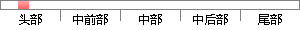

The system upgrades the storage and sharing system of the original collaborative diagnosis and treatment platform, with the aim of improving the security of medical data storage and sharing in the original system.
片段位置图

相似结果|
1
原句片段：ving the security of medical data storage and sharing in the original system.
相似片段 1：(DDH) assumption, we improve the security proof ... which is more rigorous than the original one. ..., third party data storage and pay-TV system. ...
|
※ 片段修改建议 ※
近似词参考：